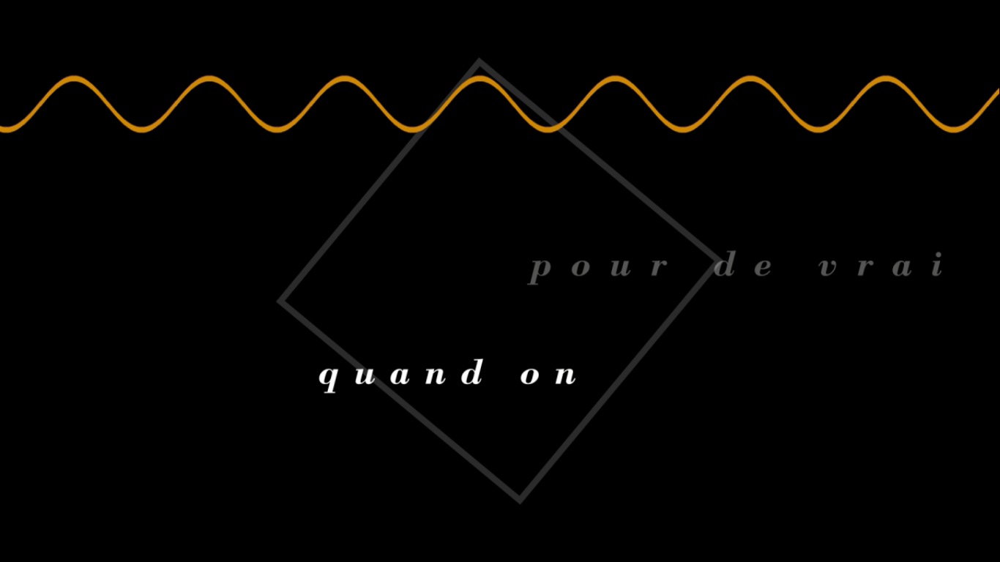

Mauvais Sang: Visual Score
Visual Score based on a excerpt from 1986 Leos Carax's movie Mauvais Sang, who contains parts from the Serge Reggiani's J'ai pas d'regrets and David Bowie's Modern Love. Developed under the class of Design IV.
Next Project:
Made In Portugal